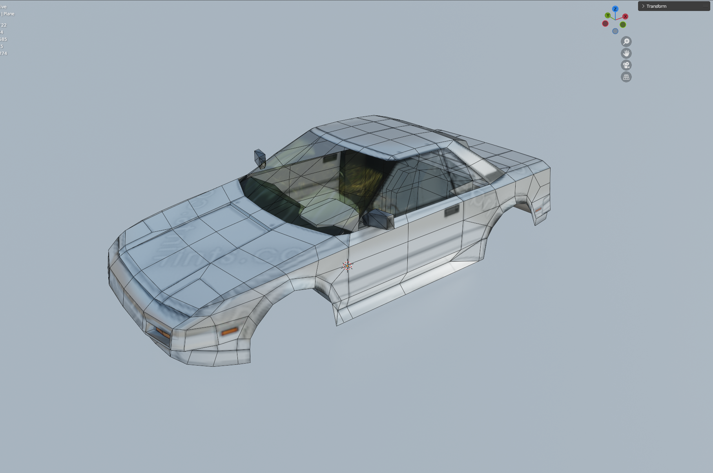
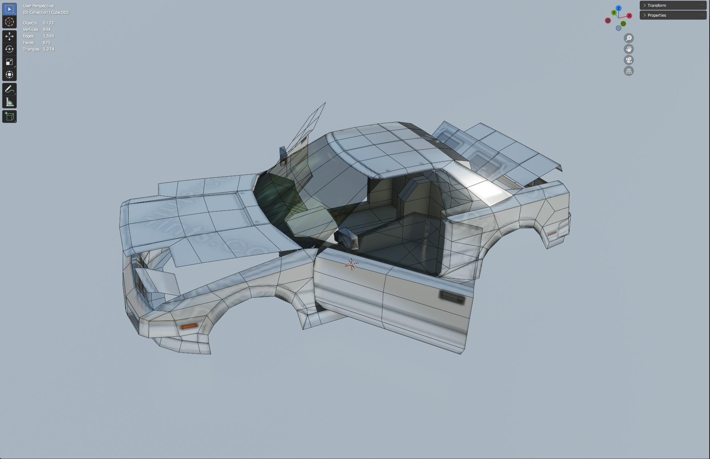
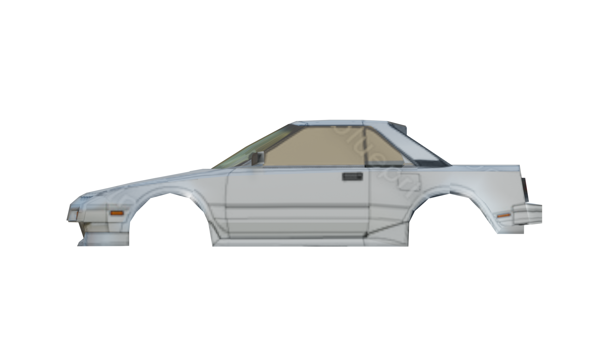
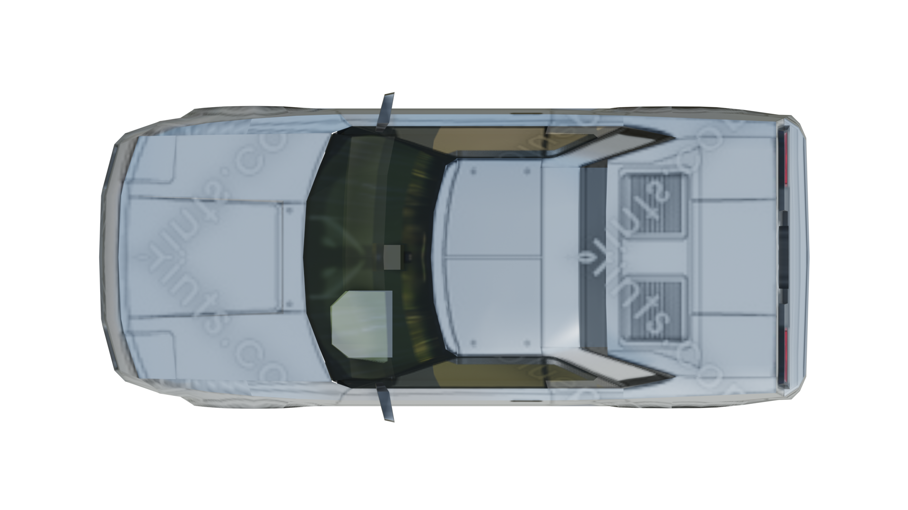
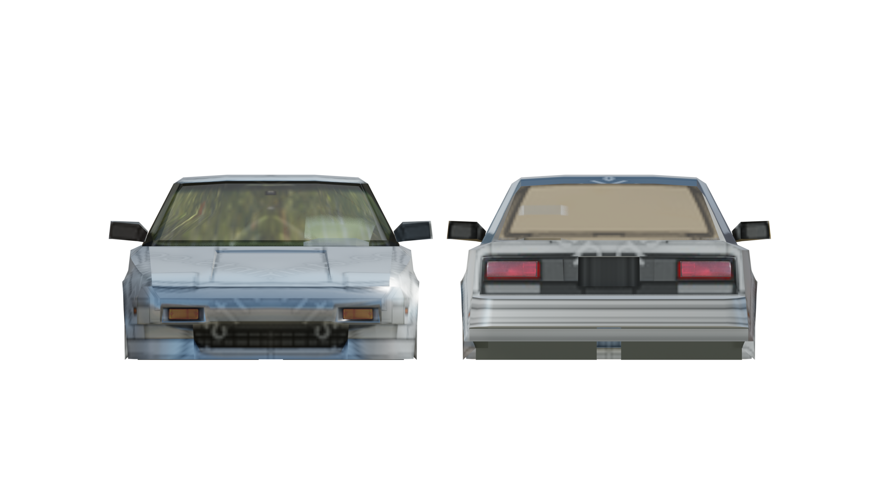

1989 AW11 Toyota MR2 - 3D Project (WIP)
Statistics:
Tri Count: 1,273
Goal: ~2,000
Texture size: TBA
About:
This is my latest Project. A 1989 Toyota MR2 AW11. My goal With this Project has been to to practice modeling a PS2/3-era car With full interior. I intend to keep the model under or around 2,000 triangles and use at most a 1024x1024 texture. For now i've used a placeholder blueprint from 'the-blueprints.com', but i intend on making my own texture for the car once i'm satisfied With the model.
My inspiration for this model has been the cars in GTA 4 and older racing games such as Richard Burns Rallye and Gran Turismo 4.
When the model is finished it will have a full interior as well as opening doors, Hood & trunk lids. The headlights will be able to open and Close as well.
Pictures:




